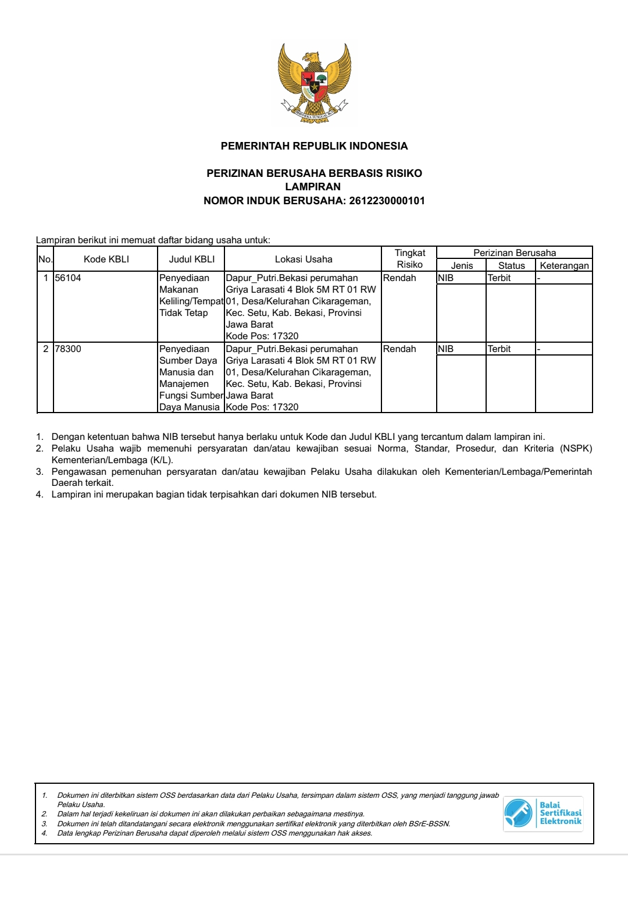

Profil Usaha
Usaha ini didirikan karena melihat permintaan pengusaha menengah kecil dan menengah besar, serta kebutuhan orang-orang yang merasa membutuhkan assisten dalam kebutuhan pribadi maupun kebutuhan bisnisnya. Oleh karena itu kami hadir untuk mempermudah dan menunjang bisnis serta menjadikan lapangan kerja baru bagi para pencari kerja yang selama ini kesulitan mencari pekerjaan. Maka dengan begitu bisnis ini berkesimpulan untuk mempertemuka para pencari kerja dengan kebutuhan bisnis atau kebutuhan pribadi yang ingin hidupnya dipermudah dengan assistenku.
Founder
Abdurrahman Hanif & Putri Rahmadani
Izin Usaha
Lampiran Nomor Induk Berusaha (NIB):
